Code
plot_icon(icon_name = "droplets", color = "dark_purple", shape = 0)plot_icon(icon_name = "droplets", color = "dark_purple", shape = 0)The statistical framework for SSNAC was first presented at the Society for Epidemiologic Research Meeting (Boston, June 2025) at a workshop titled “Single World Intervention Graphs (SWIGs) for the practicing epidemiologist” organized and taught by Aaron Sarvet (University of Massachusetts), Mats J. Stensrud (École polytechnique fédérale de Lausanne), and Kerollos Wanis (University of Texas), and also taught by Keletso Makofane (Ctrl+F), James M. Robins (Harvard University), and Thomas Richardson (University of Washington).
Lead author: Keletso Makofane, MPH, PhD. Editor: Nick Diamond, MPH. (Published: June 2025).
The Social and Spatial Network Analysis with Causal interpretation framework can be used to guide the collection, management, analysis, and causal interpretation of data. It offers guidance on conceptualizing and organizing spatial and social data as networks (Appendix A) and provides tools for descriptive and causal analysis (Appendix C).
We define SSNAC as a set of straight-forward extensions of the currently dominant framework for conducting causal inference with observational data in epidemiology. We begin by giving an overview of the dominant approach, which we will call “classic causal inference”. We extend this system to situations where data are characterized by interdependence of observational units rather than independence, naming this system “social network analysis with causal interpretation”. Finally, we accommodate social and spatial data simultaneously in the SSNAC framework. In each case, we describe the assumptions and implications of each system, illustrating with worked examples.
Classic causal inference, as elaborated by Robins (1986), Hernán and Robins (2021), and others helps us to sharpen epidemiologic reasoning by providing a template for conducting thought experiments about population health. Typically in these thought experiments, the researcher reasons about the likely effect of some hypothetical intervention on some outcome in a defined population. They define a set of causal estimands – measures that quantify the impact of the intervention of the outcome – then, through transparent statistical assumptions, express those estimands in terms of quantities we can calculate by studying the population.
For example, consider a hypothetical intervention where every person in the United States receives free, unlimited access to healthcare. Under classic causal inference, we can ask whether the prevalence of diabetes would change if we implemented such an intervention. We can even ask about the extent of change and estimate that using data that have already been observed. The classic causal inference framework allows this by:
making causal assumptions about the relationship between health care access, diabetes prevalence, and any factors that determine both access and prevalence
mathematically stating the hypothetical quantities we are interested in and expressing them in terms of quantities we can estimate
estimating those quantities using data we have or can collect
Independence
A strong assumption made often by practitioners of classic causal inference is that of independence between observational units or groups of observational units. This assumption is usually made with the goal of simplifying the mathematics involved in estimating quantities from data, but it has profound implications for how we think about the causal process under study.
In our opening example, the independence assumption holds that one person’s access to healthcare does not affect any other person’s diabetes status. It would imply that the diabetes status for a married man who does not know how to cook, for instance, would not at all be affected by improvements in health literacy experienced by his wife who cooks for the household. The assumption of independence runs counter to our intuitions about social life. Humans are deeply networked - our lives are defined by our relationships with one another.
Homogeneity
Accompanying the independence assumption are implicit or explicit assumptions about the homogeneity of the causal process under study. Consider two people, Tumi and Thabo, who each toss the same coin once at time 1 and again at time 2. Depending on our homogeneity assumptions, could say that we are conducting:
one experiment called “coin toss” and repeating it four times
two experiments called “coin toss by Thabo” and “coin toss by Tumi” and repeating each experiment twice
two experiments called “coin toss at time 1” and “coin toss at time 2” and repeating each experiment twice
four experiments called “coin toss by Thabo at time 1”, “coin toss by Thabo at time 2”, “coin toss by Tumi at time 1”, and “coin toss by Tumi at time 2” and not repeating any of them.
The choice between these interpretations turns on the experimenters prior beliefs about coin tossing: Does the likelihood of a head or tail change over time? Does it change based on the person tossing the coin? Considerations like this are made routinely in statistical modelling practice, particularly as they relate to longitudinal data. A question researchers do not often ask, however, is whether one person’s coin toss affects another’s.
Interdependence
Consider the experiment “Thabo tosses a coin, then Tumi tosses the coin, then Thabo tossess the coin, then Tumi tosses the coin.” Whereas in the above listing, by virtue of calling them separate experiments, we implicitly assumed that each coin toss was self-contained, in this latest iteration, we accommodate the possibility that the results of the coin tosses might be related.
We can quantitatively assess this possibility by repeating this sequence of coin tosses over and over, using that data to calculate a correlation coefficient between the outcomes of Thabo and Tumi’s coin tosses. Without stating the experiment as this sequence, however, we have no framework with which to ask whether Thabo and Tumi’s coin tosses are possibly related.
In epidemiologic practice, the modelling decision to categorize people or groups of people as independent of each other is so well-entrenched that it is often presented as a necessary condition for doing valid causal quantitative research. Unlike it is with coins, however, with humans, there is a mountain of evidence and experience proving interdependence as the rule rather than the exception.
Towards a causal inference of dependent happenings
Our goal in this appendix and project is to offer ideas and tools for causal inference that allow researchers to learn from interdependence rather than avoid it in pursuit of clear causal reasoning. We can have both clear reasoning and an understanding enriched by the analysis of dependent happenings.
In crude terms, our approach involves moving to a framework where, as a rule, we consider Thabo and Tumi’s coin tosses one experiment. i.e. Rather than define a scalar random variable to represent a measure made on \(n\) individuals, we will define a vector-valued random variable of length \(n\) and assume that some of the entries in that vector are correlated as a result of being part of the same causal structure.
But why do that when our tools for statistical modelling require as many repetitions as possible for valid inferences? How can we quantify uncertainty when we always have a sample size of one? Regarding the first question: we take this approach because it allows us to investigate and quantify causal interference rather than assume it away. Regarding the second: SSNAC advocates a shift in perspective.
We re-frame the task of statistical inference from that of learning from a growing collection of identically distributed random vectors to that of learning from a growing random vector whose entries are related through a causal structure. In that causal structure, we distinguish between causal relationships that play out within observational units (“structural”) from those that play out across them (“relational”), making homogeneity assumptions about both.
We avail ourselves of asymptotic theory by making the assumption of no spillover between observations, which is a weaker version of the independence between observational units assumption. These assumptions allow our estimates to benefit from having more observational units, even if they collectively contribute to one realization of the statistical model.
In the sections that follow, we describe classic causal inference, social network analysis with causal interpretation, and the SSNAC framework, each time discussing the assumptions, causal model, and causal estimands and illustrating a causal identification strategy. Finally, we describe the main analysis of the report, which applies the SSNAC framework to RESPND-MI data.
We are interested in settling an argument among friends about the relationship between dressing in formal wear and job offers. One friend thinks that dressing formally brings more job offers; everyone she knows who dresses formally has many more job offers than those who dress casually.
The other friend thinks that what really brings job offers is currently having a job. In their reasoning, having a job causes people to dress formally and also causes people to receive job offers, but dressing formally does not in itself improve a person’s likelihood of receiving job offers. We conduct a study to investigate.
We recruit three people, Person 1, Person 2, and Person 3. Person 1 and Person 2 are married to each other. Person 1 and Person 3 are acquaintances.
Say Person 1 has job status \(L_1\), Person 2 has job status \(L_2\) and Person 3 has job status \(L_3\). Each of these variables can only take on two values: “employed vs. unemployed.” Similarly we define \(A_i\) as Person \(i\)’s dress (formal vs. informal), and \(Y_i\) as their job offers (many vs. few). The job status measurement (\(L_i\)) precedes dress (\(A_i\)) in time, and dress precedes job offers (\(Y_i\)).
In the next few sections, we will use this example to describe the assumptions made under classical causal inference. First we give an overview of the ideas and tools we need to make that description: DAGs and SWIGs.
At its core, the system epidemiologists increasingly depend on for reasoning about abstract quantities such as causal effects is a statistical model called the Finest Fully Randomized Causally Interpretable Structured Tree Graph (FFRCISTG). A FFRCISTG is a collection of non-parametric structural equation models which mimic the causal process that produced the variables under investigation. At the very least it is a collection of two NPSEMs: a model of the observed data (observed data model) and a model of what the data would be under some intervention (counterfactual data model). The most common type of intervention in this framework is one which sets the value of one or more variables in the system (the exposures) with the goal of influencing the value of some set of variables in the system (the outcomes). The counterfactual data model is used to calculate quantities like causal effects. The observed data model is used to express those quantities as statistics that can be estimated using data.
A non-parametric structural equation model with independent errors is a system of equations that relates all the entries in a given vector-valued random variable to each other. It does so without specifying parametric functions for each equation in the system. An example of such a model is shown by Equation B.1. In this set of equations, values that are produced by equations higher up in the list serve as inputs to equations lower down on the list. The functions \(f_*\) are deterministic. The arguments \(U_*\) represent error terms – random variables that are independent of each other within and across observational units.
Consider a FFRCISTG modelling an intervention where we set formal dress \(A_1\) to \(a_1\), \(A_2\) to \(a_2\), and \(A_3\) to \(a_3\). The observed data model would be:
\[ \begin{aligned} L_1 &= f_{L_1}(U_{L_1}) \\ L_2 &= f_{L_2}(U_{L_2}, L_1) \\ L_3 &= f_{L_3}(U_{L_3}, L_1, L_2 ) \\ A_1 &= f_{A_1}(U_{A_1}, L_1, L_2, L_3) \\ A_2 &= f_{A_2}(U_{A_2}, L_1, L_2, L_3, A_1) \\ A_3 &= f_{A_3}(U_{A_3}, L_1, L_2, L_3, A_1, A_2) \\ Y_1 &= f_{Y_1}(U_{Y_1}, L_1, L_2, L_3, A_1, A_2, A_3) \\ Y_2 &= f_{Y_2}(U_{Y_2}, L_1, L_2, L_3, A_1, A_2, A_3, Y_1) \\ Y_3 &= f_{Y_3}(U_{Y_3}, L_1, L_2, L_3, A_1, A_2, A_3, Y_1, Y_2) \\ \end{aligned} \tag{B.1}\]
In the counterfactual data model (shown in Equation B.2 below), the values set by the investigator through intervention supercede the values that would have been generated had the experimenter not intervened. The experimenter-set values are used in subsequent equations in the model.
\[ \begin{aligned} L_1 &= f_{L_1}(U_{L_1}) \\ L_2 &= f_{L_2}(U_{L_2}, L_1) \\ L_3 &= f_{L_3}(U_{L_3}, L_1, L_2 ) \\ A_1 &= f_{A_1}(U_{A_1}, L_1, L_2, L_3) \\ A_2^{(a_1)} &= f_{A_2}(U_{A_2}, L_1, L_2, L_3, a_1) \\ A_3^{(a_1, a_2)} &= f_{A_3}(U_{A_3}, L_1, L_2, L_3, a_1, a_2) \\ Y_1^{(a_1, a_2, a_3)} &= f_{Y_1}(U_{Y_1}, L_1, L_2, L_3, a_1, a_2, a_3) \\ Y_2^{(a_1, a_2, a_3)} &= f_{Y_2}(U_{Y_2}, L_1, L_2, L_3, a_1, a_2, a_3, Y_1^{(a_1, a_2, a_3)}) \\ Y_3^{(a_1, a_2, a_3)} &= f_{Y_3}(U_{Y_3}, L_1, L_2, L_3, a_1, a_2, a_3, Y_1^{(a_1, a_2, a_3)}, Y_2^{(a_1, a_2, a_3)} ) \\ \end{aligned} \tag{B.2}\]
Whereas parametric models are characterized by their probability mass or density functions, non-parametric models of this type are usually characterized by model restrictions in the form of conditional independencies.
Restrictions are crucial: to fully characterize the NPSEM specified in Equation B.1 using observed data, we would need to estimate nine functions using one observation of the nine-dimensional joint distribution that gave rise to the participants’ observations. Recruiting an additional person to the study would not ease this problem; it would add three new equations to the model and we would end up with a similar problem than the one we began with. We would have to estimate 12 functions using one observation of a 12-dimensional joint distribution.
We can simplify this system of equations by making assumptions that leave us with fewer functions to estimate and more observations per function. These assumptions are called model restrictions because they restrict the set of distributions that could possibly be represented by the NPSEM. For instance, if we add the restriction that all the measures are independent (or equivalently, that the DAG has no arrows), the resulting model would not be able to represent data from a causal system where some of the measures are correlated. By adding the restriction of independence, we would be eliminating the correlated data distribution from consideration as a possibility for how the data we are modelling are truly distributed.
It is possible to deduce the conditional independence restrictions of an NPSEM using the structural equations themselves. For instance, we can check whether two variables are (conditionally) independent by checking whether both variables are a function of the same common error term \(U_*\). It turns out that queries like this are much simpler to deduce through a graphical representation of the NPSEM than through the NPSEM itself, however. Directed acyclic graphs allow the efficient communication of conditional independence assumptions that define NPSEMs.
A causal directed acyclic graph (DAG) (Figure B.1) is a graph whose nodes represent the variables in an observational non-parametric structural equation model with independent errors (Equation B.1). Directed edges point from the arguments to the result of each structural equation.
make_dag("fully_connected") |>
plot_swig(node_radius = 0.2) +
scale_fill_mpxnyc(option = "light") +
theme_mpxnyc_blank()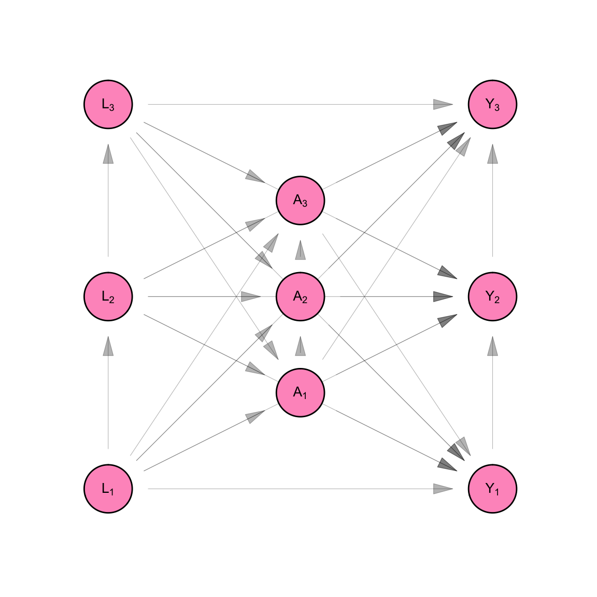
A single world intervention graph (SWIG) (Figure B.2) is a graph whose nodes represent the variables in a counterfactual non-parametric structural equation model with independent errors (Equation B.2). Directed edges point from the arguments to the result of each structural equation.
make_swig("fully_connected") |>
plot_swig(node_radius = 0.2) +
scale_fill_mpxnyc(option = "light") +
theme_mpxnyc_blank()
DAGs and SWIGs are useful because they simplify this task by encoding the statistical relationships through a set of graphical rules called d-separation. Two variables in an NPSEM are conditionally independent if they are d-separated in the causal DAG representing the NPSEM.
D-separation is a set of rules for translating DAGs into conditional independence statements. A pair of nodes is d-separated if all the paths linking them are closed or if there is no path that links them.
A path is a sequence of nodes that starts with a given origin node and ends with a terminal node. Consecutive entries in the sequence are connected in the DAG. A path of length one is open by definition. A path of length two or more is open if all its triangles are open.
A triangle is a sub-sequence of a path which contains three consecutive nodes from the path. A canonical triangle is one in which we do not condition on the apex node. A conditional triangle is one in which we do condition.
A fork is a triangle whose apex variable has two outgoing edges. A canonical fork is open and a conditional fork is closed. The apex variable of a fork is commonly referred to as a “confounder.”
A spoon is a triangle whose apex variable has two incoming edges. A canonical spoon is closed and a conditional spoon is open. The apex variable of a fork is commonly referred to as a “collider.”
A chopstick is a triangle whose apex variable has one incoming edge and one outgoing edge. A canonical chopstick is open and a conditional chopstick is closed. The apex variable of a chopstick is commonly referred to as a “mediator.”
Under classic causal inference, we assume that observations are independent and identically distributed. We review these assumptions, naming them slightly differently for the purpose of comparing them with the assumptions made in subsequent sections. In each case, we divide assumptions up into independence assumptions (assumptions that delete arrows from the DAG) and homogeneity assumptions (assumptions that simplify the system of structural equations).
Under classic causal inference, we make the assumption of no spillover - that measurements taken across participants at the same time (e.g. \(L_1\), \(L_2\), and \(L_3\)) are independent of each other given all prior measures. i.e.:
\[ \begin{aligned} L_1 \perp L_2 \\ L_2 \perp L_3 \\ L_1 \perp L_3 \end{aligned} \]
\[ \begin{aligned} A_1 \perp A_2 | L_1, L_2, L_3\\ A_2 \perp A_3 | L_1, L_2, L_3 \\ A_1 \perp A_3 | L_1, L_2, L_3 \end{aligned} \]
\[ \begin{aligned} Y_1 \perp Y_2 | L_1, L_2, L_3, A_1, A_2, A_3\\ Y_2 \perp Y_3 | L_1, L_2, L_3, A_1, A_2, A_3 \\ Y_1 \perp Y_3 | L_1, L_2, L_3, A_1, A_2, A_3 \end{aligned} \]
This is shown in Figure B.3 as the removal of arrows that connected the \(L_i\)’s, \(A_i\)’s and \(Y_i\)’s. In Equation B.3, the \(L_i\)’s are not functions of each other, the \(A_i\)’s are not functions of each other, and the \(Y_i\)’s are not functions of each other. i.e. Given all the measurements taken prior to a set of contemporaneous measures, the contemporaneous measures are independent. This follows from the independence of the error terms \(U_{L_i}\), the error terms \(U_{A_i}\), and the error terms \(U_{Y_i}\) across observations \(i\).
make_dag("full_interference") |>
plot_swig(node_radius = 0.2) +
scale_fill_mpxnyc(labels = c("h"), option = "light") +
theme_mpxnyc_blank()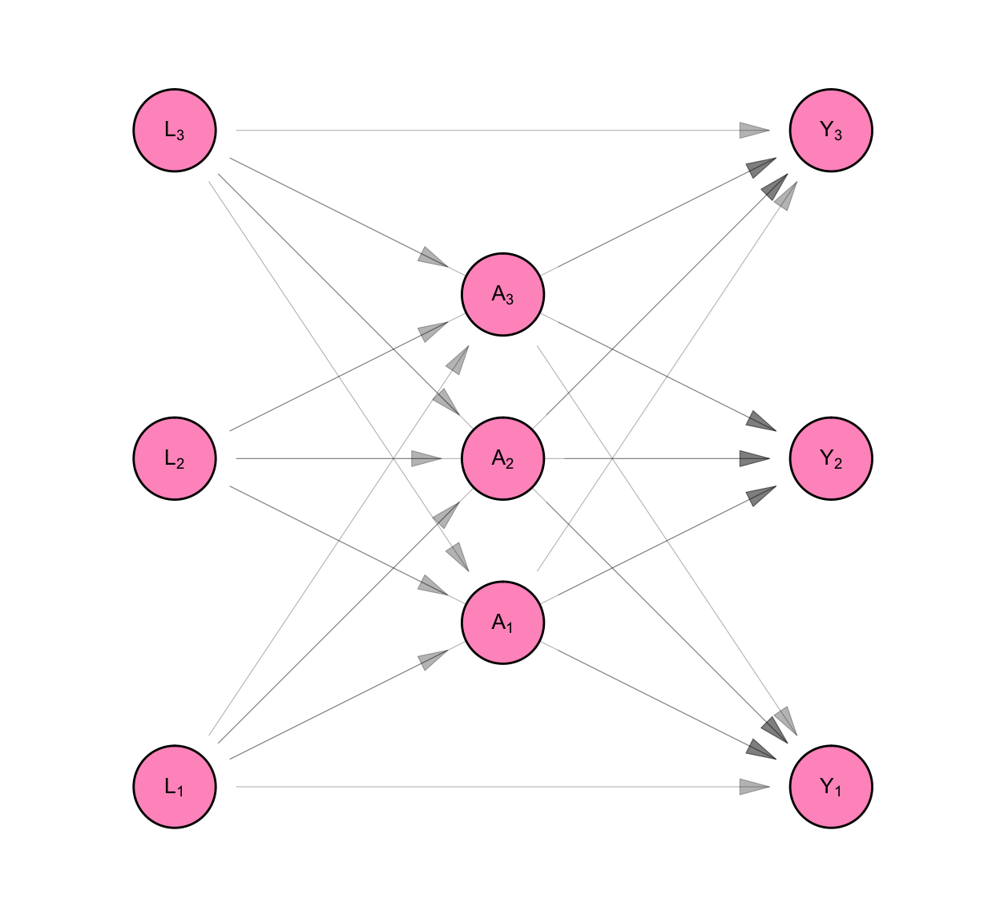
\[ \begin{aligned} L_1 &= f_{L_1}(U_{L_1}) \\ L_2 &= f_{L_2}(U_{L_2}) \\ L_3 &= f_{L_3}(U_{L_3} ) \\ A_1 &= f_{A_1}(U_{A_1}, L_1, L_2, L_3) \\ A_2 &= f_{A_2}(U_{A_2}, L_1, L_2, L_3) \\ A_3 &= f_{A_3}(U_{A_3}, L_1, L_2, L_3) \\ Y_1 &= f_{Y_1}(U_{Y_1}, L_1, L_2, L_3, A_1, A_2, A_3) \\ Y_2 &= f_{Y_2}(U_{Y_2}, L_1, L_2, L_3, A_1, A_2, A_3) \\ Y_3 &= f_{Y_3}(U_{Y_3}, L_1, L_2, L_3, A_1, A_2, A_3) \\ \end{aligned} \tag{B.3}\]
Classic causal inference makes the assumption of no interference. i.e. We assume that measurements made across participants, but not at the same time, are independent of each other. This is shown as the absence of arrows that point from the \(L_i\)’s to \(A_j\)’s, the \(L_i\)’s to the \(Y_j\)’s and the \(A_i\)’s to the \(Y_j\) for participants \(i\neq j\) (see Figure B.4).
This allows us to simplify the structural equation model so that each participant’s measures are a function of only measures taken on them.
\[ \begin{aligned} L_1 &= f_{L_1}( U_{L_1}) \\ L_2 &= f_{L_2}( U_{L_2}) \\ L_3 &= f_{L_3}( U_{L_3}) \\ A_1 &= f_{A_1}( U_{A_1}, L_1) \\ A_2 &= f_{A_2}( U_{A_2}, L_2) \\ A_3 &= f_{A_3}( U_{A_3}, L_3) \\ Y_1 &= f_{Y_1}( U_{Y_1}, L_1, A_1 ) \\ Y_2 &= f_{Y_2}( U_{Y_2}, L_2, A_2 ) \\ Y_3 &= f_{Y_3}( U_{Y_3}, L_3, A_3 ) \\ \end{aligned} \]
Finally, we see above that the functions that generate observations \(L_i\) are similar in structure to each other, as are the the functions that generate \(A_i\)’s and \(Y_i\)s. We make the homogeneity assumption that the functions are identical to each other.
\[ \begin{aligned} f_L &= f_{L_1} = f_{L_2} = f_{L_3} \\ f_A &= f_{A_1} = f_{A_2} = f_{A_3} \\ f_Y &= f_{Y_1} = f_{Y_2} = f_{Y_3} \\ \end{aligned} \]
The homogeneity and indepdndence assumptions allow us to re-write the structural equation model dropping the person subscript from the equations. The model simplifies into one for three measures each taken on one person, rather than a model for nine measures taken on three people. Since the measures on each person are identically distributed, this model can be used three times to separately generate the measures for Person 1, Person 2, and Person 3. By contrast, the original model produced measures for all three people at one go.
Figure B.4 and Equation B.4 show the resulting non-parametric structural equation model for our data if we analyse it under classic causal inference. As a consequence of the assumptions stated in Section B.1.1, we can represent the model using three equations rather than nine. We retain the person subscript on the random variables in Equation B.4 and we keep all nine nodes in the DAG on Figure B.4. This is to remind us that, though our model is for one person, our purpose was always to infer something about the sample of three people.
make_dag("independence") |>
plot_swig(node_radius = 0.2) +
scale_fill_mpxnyc(option = "light") +
theme_mpxnyc_blank()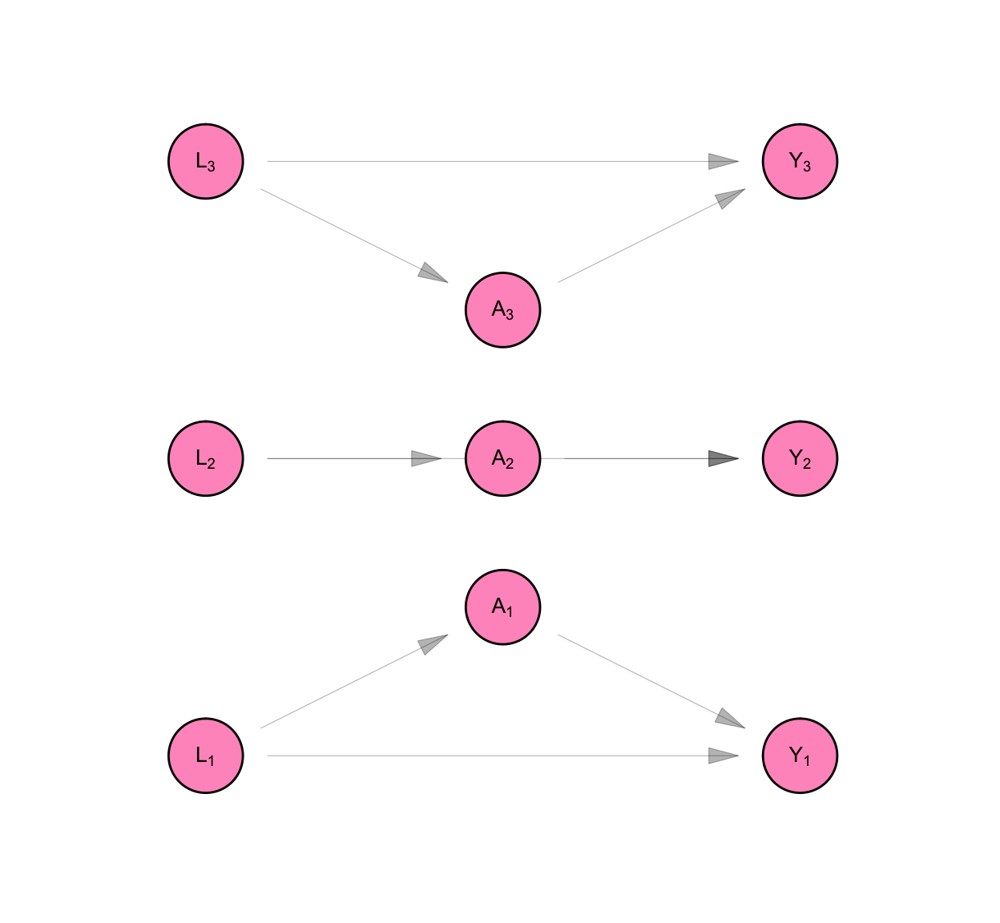
\[ \begin{aligned} L_i &= f_{L}( U_{L_i}) \\ A_i &= f_{A}( U_{A_i}, L_i) \\ Y_i &= f_{Y}( U_{Y_i}, L_i, A_i) \\ \end{aligned} \tag{B.4}\]
We define counterfactual outcomes \(Y_1^{(a_1)}\), \(Y_2^{(a_2)}\), and \(Y_3^{(a_3)}\) which represent the level of job opportunities, Persons 1, 2, and 3, would have if we set their dress to level \(a_1\), \(a_2\), and \(a_3\), respectively. Then the model for counterfactual variables is given by Equation B.5.
It is represented using the SWIG pictured in Figure B.5. A SWIG represents a structural equation model where some of the equations are superseded by the value assigned by the experimenter. For so-called “treatment variables,” the diagram separates the value of the variable as it would have been observed with no intervention (\(A_i\)) from the value that as it will be used in subsequent equations (\(a_i\)) as a result of the experimenter’s intervention.
Note that because of the assumption of no interference and no spillover, each counterfactual outcome is a function only of the treatment value of the same individual.
To ensure that counterfactual outcomes are well-defined for all experimental units, we make the assumption of positivity:
\[ 0 < P[A_i = a | L_i] < 1 \]
for \(a \in \{0,1\}\)
make_swig("independence") |>
plot_swig(node_radius = 0.2) +
scale_fill_mpxnyc(option = "light") +
theme_mpxnyc_blank()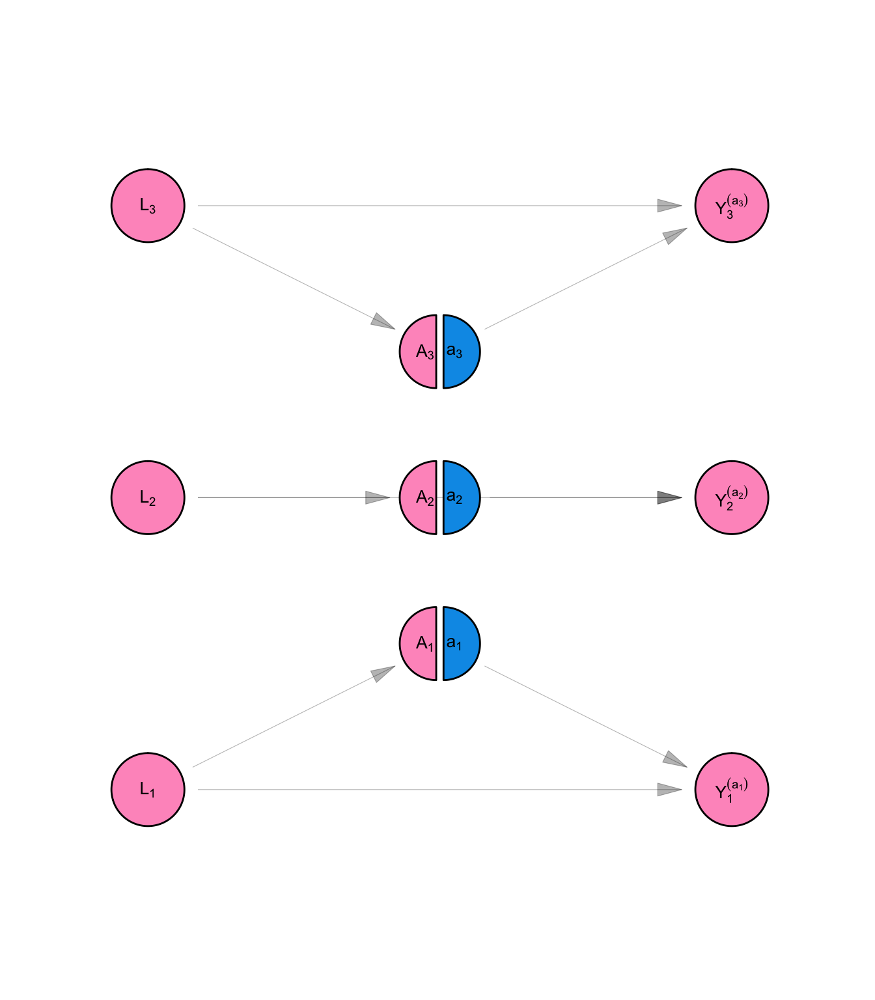
\[ \begin{aligned} L_i &= f_{L}( U_{L_i} ) \\ A_i &= f_{A}( U_{A_i}, L_i) \\ Y_i^{(a_i)} &= f_{Y}(U_{Y_i} , L_i, a_i) \\ \end{aligned} \tag{B.5}\]
We are interested in whether changing how formally someone dresses would change their level of job offers, on average, in our population. To determine the answer, we will compare the average counterfactual outcome of job opportunities for formal dress to the average counterfactual outcome of job opportunities for non-formal dress. i.e. We will make the following comparison:
\[ \begin{aligned} E \left[ \frac{1}{n} \sum_i Y_i^{(a=1)} - Y_i^{(a=0)} \right] \end{aligned} \]
Once we have specified the hypothetical quantities from our thought experiment, we “identify” them, meaning write them in terms of the observed rather than counterfactual model. It is sufficient to identify the quantity:
Notes on identification
A. In the first line, we use the law of iterated expectations.
B. In the second line, we use the definition for counterfactual outcome \(Y_i^{(a)}\) as specified in Equation B.5.
C. In the third line, we use the fact that when \(L_i\) is fixed, \(f_{Y}(U_{Y_i} , L_i, a)\) is a function of random variable \(U_{Y_i}\) and \(A_i\) is a function of \(U_{A_i}\). Since \(U_{Y_i}\) and \(U_{A_i}\) are independent by definition of the NPSEM-IE, \(f_{Y}(U_{Y_i} , L_i, a) \perp A_i | L_i\).
D. In the fourth line we consider the expected value of \(f_{Y}(U_{Y_i} , L_i, a)\) when \(A_i = a\), in particular
E. In the fifth line, we use the definition for observed value \(Y_i\) according as specified in Equation B.4.
\[ \begin{aligned} E[Y_i^{(a)}] &= E \left[ E[Y_i^{(a)} | L_i] \right] \\ &= E \left[ E[f_{Y}(U_{Y_i} , L_i, a) | L_i] \right] \\ &= E \left[ E[f_{Y}(U_{Y_i} , L_i, a) | L_i , A_i] \right] \\ &= E \left[ E[f_{Y}(U_{Y_i} , L_i, a) | L_i , A_i = a] \right] \\ &= E \left[ E[Y_i | L_i , A_i = a] \right] \\ \end{aligned} \]
We can estimate \(E[Y_i | L_i = l, A_i = a]\) non-parametrically by calculating the average of observations \(Y_i\) for which \(L_i = l\) and \(A_i = a\). These estimates improve as \(n \rightarrow \infty\).
Typically, there are three assumptions which are usually stated as necessary conditions for valid causal inferences: conditional exchangeability,
\[ Y_i^{(a)} \perp A_i | L_i \] consistency,
\[ E[Y_i^{(a)} | L_i = l_i, A_i = a] = E[Y_i | L_i = l_i, A_i = a] \] and positivity
\[ 0 < E[A_i | L_i] < 1 \]
Conditional exchangeability is a consequence of the independence of errors in the NPSEM-IE (see notes on identification assumptions above). Consistency is a consequence of the fact that a) the structural equations for the observed model are identical with the equations for the counterfactual model; and b) the error terms for each individual \(i\) in the counterfactual model are equal to the error terms in the observed model. i.e. \(U_{Y_i}\) has the same value in Equation B.5 as it does in Equation B.4. Unlike the first two, the assumption of positivity is not given by the definition of the NPSEM. We make it in defining the structural equation models for counterfactual variables (Equation B.5).
We mentioned that in our study sample Person 1 and Person 2 are married to each other and Person 1 and Person 3 are acquaintance. In the causal system connecting their job status, dress and job offers, an argument could be made that Person 1’s job status affects Person 2’s dress, since they pool their salaries as a married couple. It could also be argued that Person 1’s job status affects Person 2’s job opportunities if having a job brings the married couple into contact with other married couples who are connected to job markets.
Finally, we could argue that Person 1’s dress affects Person 2’s job opportunities if some aspect of the reputation Person 2 enjoys among potential colleagues derives from their spouse’s appearance. Symmetrically, Person 2’s measures could influence Person 1’s.
But what about the relationship between Person 1 and Person 3? How does that shape the measurements of either person? We can imagine that the dress of a newly acquainted colleague would not affect the dress and job opportunities of her colleague. Whereas Person 1 and Person 2 are causally related, Person 1 and Person 3 are not; their relationship is irrelevant to the causal system under investigation. Person 2 and Person 3 do not affect each other since they have no relationship at all.
Before specifying a model that can accommodate the interdependence between Persons 1 and 2, we outline some definitions which we will need to describe the network causal inference model.
We draw on Aronow and Samii (2017) to define exposure mappings. Say we have a non-parametric structural equation model with measures \(\mathbf{Y}, \mathbf{X}_t \in \{0,1\}^n\) with \(t \in [1,K]\). \(f_{Y_i}\) is the structural equation for \(Y_i\), and \(U_{Y_i}\) the error term for that equation. We define the graph \(\mathscr{G}(\mathscr{N}, \psi)\) as an ordered pair whose first entry is a set containing \(n\) nodes, each representing an observational unit in the study. The second entry is an adjacency function \(\psi(i,j)\) which gives the weight between nodes \(i\) and \(j\). Weights are positive real numbers when the nodes are connected in \(\mathscr{G}\) and zero otherwise. We further define the “network exposure units” for node \(i\) as
\[ \mathscr{N_i} = \{j \in \mathscr{N}: \psi(i, j) > 0\} \]
\(\Psi_i \in \mathbf{R}^n\) is a vector whose \(j^{th}\) entry is \(\psi(i,j)\). \(X_i\) is the \(i^{th}\) entry of vector \(\mathbf{X}\) and \(\mathbf{X}_{\mathscr{N_i}}\) is the sub-vector of \(\mathbf{X}\) which contains entries related to person \(i\)’s network exposure units. Where the original vector already has a subscript, we append onto that subscript \(i\) and \(\mathscr{N_i}\), respectively. For instance, \(X_{ti}\) is the \(i^{th}\) entry of \(\mathbf{X}_t\) and \(\mathbf{X}_{t\mathscr{N_i}}\) is the sub-vector relating to node \(i\)’s network exposure units. \(\mathbf{M}\) is a permutation matrix – a square matrix whose row and column margins all equal 1 and whose entries are either zero or one. Pre-multiplying a vector with a conformable permutation matrix permutes the order of the entries in the vector.
We define the “exposure mapping for \(Y_i\)” as a function \(g_i \in \mathbf{R}^{2K}\) such that:
\[ Y_i = f_{Y_i}(g_i(\mathbf{X}_1, ..., \mathbf{X}_K), U_{Y_i}) \]
We say exposure mapping \(g_i\) is separable if
\[ g_i(\mathbf{X}_{1}, ..., \mathbf{X}_{K}) = [g_0, g_{1i}(\mathbf{X}_{1}), ..., g_{Ki}(\mathbf{X}_{K})]^T \]
where \(g_0 = [X_{1i}, ..., X_{Ki}]^T\) and \(g_{ti} \in \mathbf{R}\). We call the functions \(g_{ti}\) component functions of exposure mapping \(g_i\).
We say a component function \(g_{ti}\) is loyal to graph \(\mathscr{G}\) if for \(\mathbf{X}_t,\mathbf{X}'_t \in \{0,1\}^n\)
\[ \begin{equation} \mathbf{X}_{t\mathscr{N}_i} = \mathbf{X'}_{t\mathscr{N}_i} \implies g_{ti}(\mathbf{X}_t) = g_{ti}( \mathbf{X'}_t) \end{equation} \]
We say component functions \(g_{ti}\) are positionally invariant if for \(i,j \in \mathscr{N}\), \(\mathbf{X},\mathbf{X}' \in \mathbf{R}^n\) and conformable permutation matrix \(\mathbf{M}\):
\[ \begin{equation} \mathbf{X}_{\mathscr{N}_i} = \mathbf{M} \mathbf{X'}_{\mathscr{N}_j} \text{ and } \Psi_{i\mathscr{N}_i} = \mathbf{M} \Psi_{j\mathscr{N}_j}\\ \implies \\ g_{ti}(\mathbf{X}) = g_{tj}(\mathbf{X'}) \end{equation} \]
If functions \(g_{ti}\) is positionally invariant with respect to \(\mathscr{G}\) we say it is a “network exposure mapping for \(\mathbf{Y}\) with respect to \(\mathbf{X}_t\) in \(\mathscr{G}\)”. The value of the function is called the “network exposure value for \(Y_i\) with respect to \(\mathbf{X}_t\) in \(\mathscr{G}\)”. Furthermore,
\[ g_{ti}(\mathbf{X}) = g_{t}(\mathbf{X}, \Psi_i) \]
We say that a network exposure mapping \(g_{t}\) is bounded if for all \(\mathbf{X}, \mathbf{W} \in \{0,1\}^n\) all possible network exposure values are contained by a finite set \(\mathbf{D}\)
\[ g_t(\mathbf{X}, \mathbf{W}) \in \mathbf{D} \]
and \(|\mathbf{D}| < c\) for some constant \(c\), where \(c\) is not a function of the number of interconnected units in graph \(\mathscr{G}\).
The assumption of boundedness can obtain in three different ways. It could be as a result of restrictions on the structure of the data graph. It could be the case that in the network of interest, there is an upper bound on node degree. For example, if the only relationships of interest between individual participants were marriages, each node would have a degree of either 0 or 1, meaning the count of alters with \(X_{tj} = 1, j \in \mathscr{N}_i\) is either zero or one.
It might obtain via restrictions of the value of \(\mathbf{X}_t\) itself. It might be the case, for instance, that the count of \(i\)’s for which \(X_{ti}=1\) is very low so that on average, the count of alters for which \(X_{tj} = 1, j \in N_i\) will also be low.
Finally, boundedness could obtain as a result of the functional form of \(g_t\) itself. This might happen if \(g_t\) models a network exposure which has a ceiling effect in its dose-response curve with the outcome of interest. For example, if \(X_t\) indicates ownership of a car, and \(\mathscr{G}\) encodes close friendships, \(g_t\) would be a network exposure mapping which tells us how each additional friend who has a car shifts the outcome of interest. For most health applications, its likely that beyond some number of friends (say 10) who have a car, an additional friend who gets a car will not change the outcome.
Under network causal inference, we make the assumption of no spillover - that measurements taken across participants at the same time (e.g. \(L_1\), \(L_2\), and \(L_3\)) are independent of each other given all prior measures.
This is shown in Figure B.6, as the removal of arrows that connected the \(L_i\)’s, \(A_i\)’s and \(Y_i\)’s in Figure B.1. In Equation B.6, the \(L_i\)’s are not functions of each other, the \(A_i\)’s are not functions of each other, and the \(Y_i\)’s are not functions of each other. This implies that given all the measurements taken prior to a set of contemporaneous measures, the contemporaneous measures are independent.
make_dag("network_interference") |>
plot_swig(node_radius = 0.2) +
scale_fill_mpxnyc(option = "light") +
theme_mpxnyc_blank()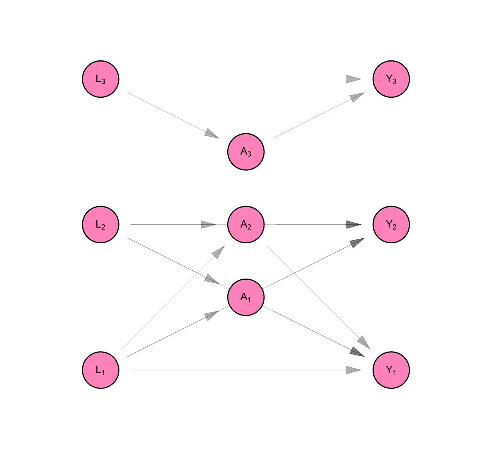
\[ \begin{aligned} L_1 &= f_{L_1}(U_{L_1}) \\ L_2 &= f_{L_2}(U_{L_2}) \\ L_3 &= f_{L_3}(U_{L_3} ) \\ A_1 &= f_{A_1}(U_{A_1}, L_1, L_2) \\ A_2 &= f_{A_2}(U_{A_2}, L_1, L_2) \\ A_3 &= f_{A_3}(U_{A_3}, L_3) \\ Y_1 &= f_{Y_1}(U_{Y_1}, L_1, L_2, A_1, A_2) \\ Y_2 &= f_{Y_2}(U_{Y_2}, L_1, L_2, A_1, A_2) \\ Y_3 &= f_{Y_3}(U_{Y_3}, L_3, A_3) \\ \end{aligned} \tag{B.6}\]
Under network causal inference, we make the assumption that interference respects some mapping between individuals - a mapping given by a graph. In Figure B.6, based on their relationships with one another, Person 1’s measures are connected with Person 2’s, and neither are connected with Person 3’s.
We assume that the exposure mapping for each variable in the structural model is separable. i.e. We define \(g_{A_i}\), \(h_{Y_i}\), and \(g_{Y_i}\) as network exposure mappings for \(A_i\) with respect to \(\mathbf{L}\), for \(Y_i\) with respect to \(\mathbf{A}\), and for \(Y_i\) with respect to \(\mathbf{L}\). Seperability allows us to write the model as follows:
\[ \begin{aligned} L_1 &= f_{L_1}(U_{L_1}) \\ L_2 &= f_{L_2}(U_{L_2}) \\ L_3 &= f_{L_3}(U_{L_3} ) \\ A_1 &= f_{A_1}(U_{A_1}, L_1, g_{A_1}(\mathbf{L}, \Psi_1)) \\ A_2 &= f_{A_2}(U_{A_2}, L_2, g_{A_2}(\mathbf{L}, \Psi_2)) \\ A_3 &= f_{A_3}(U_{A_3}, L_3, g_{A_3}(\mathbf{L}, \Psi_3)) \\ Y_1 &= f_{Y_1}(U_{Y_1}, L_1, A_1, g_{Y_1}(\mathbf{L}, \Psi_1), h_{Y_1}(\mathbf{A}, \Psi_1)) \\ Y_2 &= f_{Y_2}(U_{Y_2}, L_2, A_2, g_{Y_2}(\mathbf{L}, \Psi_2), h_{Y_2}(\mathbf{A}, \Psi_2)) \\ Y_3 &= f_{Y_3}(U_{Y_3}, L_3,A_3, g_{Y_2}(\mathbf{L}, \Psi_3), h_{Y_2}(\mathbf{A}, \Psi_3)) \\ \end{aligned} \]
Where
\[ \begin{aligned} \Psi_1 &= [0,1,0] \\ \Psi_2 &= [1,0,0] \\ \Psi_3 &= [0,0,0] \\ \end{aligned} \]
We assume that the value of a network exposure mapping is invariant to its position in the network. This allows us to drop the person subscript on the network exposure mappings.
\[ \begin{aligned} L_1 &= f_{L_1}(U_{L_1}) \\ L_2 &= f_{L_2}(U_{L_2}) \\ L_3 &= f_{L_3}(U_{L_3} ) \\ A_1 &= f_{A_1}(U_{A_1}, L_1, g_{A}(\mathbf{L}, \Psi_1)) \\ A_2 &= f_{A_2}(U_{A_2}, L_2, g_{A}(\mathbf{L}, \Psi_2)) \\ A_3 &= f_{A_3}(U_{A_3}, L_3, g_{A}(\mathbf{L}, \Psi_3)) \\ Y_1 &= f_{Y_1}(U_{Y_1}, L_1, A_1, g_{Y}(\mathbf{L}, \Psi_1), h_{Y}(\mathbf{A}, \Psi_1)) \\ Y_2 &= f_{Y_2}(U_{Y_2}, L_2, A_2, g_{Y}(\mathbf{L}, \Psi_2), h_{Y}(\mathbf{A}, \Psi_2)) \\ Y_3 &= f_{Y_3}(U_{Y_3}, L_3,A_3, g_{Y}(\mathbf{L}, \Psi_3), h_{Y}(\mathbf{A}, \Psi_3)) \\ \end{aligned} \]
We assume that the structural equations that produce indivdual measures are identical across individuals. Hence, we can drop the person subscript from the structural equations.
\[ \begin{aligned} L_i &= f_{L}(U_{L_i}) \\ A_i &= f_{A}(U_{A_i}, L_i, g_{A}(\mathbf{L}, \Psi_i)) \\ Y_i &= f_{Y}(U_{Y_i}, L_i, A_i, g_{Y}(\mathbf{L}, \Psi_i), h_{Y}(\mathbf{A}, \Psi_i)) \\ \end{aligned} \]
If we assume that the only relevant relationships for the causal structure related to employment, formal dress, and job offers are marriages, the assumption of boundedness holds. Each node in this graph will have either a single network exposure unit, or none at all, even if the graph grows arbitrarily large.
\[ \begin{aligned} g_{A}(\mathbf{L}, \Psi_i) &\in \{0, 1\} \\ g_{Y}(\mathbf{L}, \Psi_i) &\in \{0, 1\} \\ h_{Y}(\mathbf{A}, \Psi_i) &\in \{0, 1\} \\ \end{aligned} \]
Figure B.7 and Equation B.7 show the resulting non-parametric structural equation model for our data, if we analyse it under network causal inference. Because of the assumption of identical distributions, we can represent the model using three equations rather than nine. We retain the person subscript on the random variables in Equation B.7 and we keep all nine nodes in the DAG on Figure B.7 and add six additional nodes to represent network exposure values with respect to \(\mathbf{A}\) and \(\mathbf{L}\).
We draw the DAG like this to clarify that though our model is for one person, it represents a part of a system that relates all the people in the sample with each other. Our original purpose, after all, was to infer something about the sample, not any one individual in it.
make_dag("homogenous_interference") |>
plot_swig(node_radius = 0.2) +
scale_fill_mpxnyc(option = "light") +
theme_mpxnyc_blank()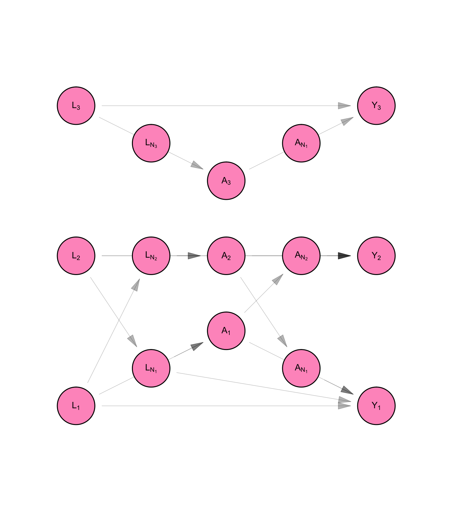
We can re-write the structural equation model like this:
\[ \begin{aligned} L_i &= f_{L}( U_{L_i} ) \\ A_i &= f_{A}( U_{A_i}, L_i, g_{A}(\textbf{L}, \Psi_i) ) \\ Y_i &= f_{Y}( U_{Y_i}, L_i, g_{Y}(\textbf{L}, \Psi_i), A_i, h_{Y}( \textbf{A}, \Psi_i ) ) \\ \end{aligned} \tag{B.7}\]
We define counterfactual outcomes \(Y_1^{(a_1, \mathbf{a}_{\mathscr{N}_1})}\), \(Y_2^{(a_2, \mathbf{a}_{\mathscr{N}_2})}\), and \(Y_3^{(a_3, \mathbf{a}_{\mathscr{N}_3})}\), which represent the level of job opportunities, Persons 1, 2, and 3, would have if we set their dress to level \(a_1\), \(a_2\), and \(a_3\), respectively. Then the model for counterfactual variable is given by Equation B.8. It is represented using a SWIG in Figure B.8.
Note that because of the assumption of network interference, the counterfactual outcome for Person 1 is a function of Person 2’s treatment value and vice versa. The counterfactual outcome for Person 3, on the other hand, is a function of Person 3’s treatment (\(a_3\)) alone. This is because \(\mathscr{N}_1 = \{2\}\), \(\mathscr{N}_2 = \{1\}\), and \(\mathscr{N}_3 = \{\}\), according to Example 2.
To ensure that counterfactual outcomes are well-defined for all experimental units, we make the assumption of positivity:
\[ 0 < P[A_i = a_i, h_Y (\mathbf{A}, \Psi_i) = h_Y(\mathbf{a}, \Psi_i)| L_i,g_{A}(\mathbf{L}, \Psi_i) ] < 1 \] for all \(\mathbf{a} \in \{0,1\}^n\)
make_swig("homogenous_interference") |>
plot_swig(node_radius = 0.2) +
scale_fill_mpxnyc(option = "light") +
theme_mpxnyc_blank()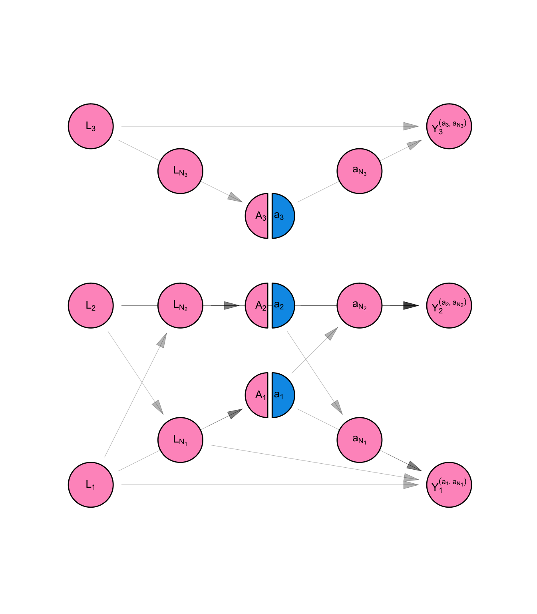
\[ \begin{aligned} L_i &= f_{L}( U_{L_i} ) \\ A_i &= f_{A}( U_{A_i}, L_i, g_{A}(\textbf{L}, \Psi_i) ) \\ Y_i^{(a_i,\textbf{a}_{\mathscr{N}_i} )} &= f_{Y}(U_{Y_i}, L_i, a_i, g_{Y}(\textbf{L}, \Psi_i), h_{Y}(\textbf{a}, \Psi_i) ) \\ \end{aligned} \tag{B.8}\]
We are interested in whether on average, in our population of three people, changing someone’s dress would change their level of job offers. To determine the answer, we will compare the average counterfactual outcome of job opportunities if everyone wore formal dress to the average counterfactual outcome of job opportunities if everyone wore non-formal dress. i.e. We will make the following comparison:
\[ \frac{1}{n}\sum_i E[Y_i^{(a = 1, \mathbf{a}_{\mathscr{N}_i} = \textbf{ 1})} - Y_i^{(a = 0, \mathbf{a}_{\mathscr{N}_i} = \textbf{ 0})}] \]
It is possible to decompose this average causal effect into a portion attributable to direct (within individual) causal pathways. This tells us, on average, to what extent one’s own dress affects one own’s job opportunities.
\[ \frac{1}{n}\sum_i E[Y_i^{(a = 1, \mathbf{a}_{\mathscr{N}_i} = \textbf{ 0})} - Y_i^{(a = 0, \mathbf{a}_{\mathscr{N}_i} = \textbf{ 0})}] \] We can calculate the portion of the average total effect attributable to spillover (cross-individual) causal pathways. This tells us, on average, to what extent one’s spouse’s dress affects one’s job opportunities.
\[ \frac{1}{n}\sum_i E[Y_i^{(a = 1, \mathbf{a}_{\mathscr{N}_i} = \textbf{ 1})} - Y_i^{(a = 1, \mathbf{a}_{\mathscr{N}_i} = \textbf{ 0})}] \]
We can start by using the law of iterated expectations:
\[ \begin{aligned} E \left[ \frac{1}{n} \sum_i Y_i^{(a_i, \mathbf{a}_{\mathscr{N}_i})} \right] &= E \left[ \frac{1}{n} \sum_i E[Y_i^{(a_i, \mathbf{a}_{\mathscr{N}_i})} | \mathbf{L}] \right] \\ \end{aligned} \]
Then we can evaluate the inner expectation as follows:
Notes on identification
A. In the first line, we use the loyalty of the network exposure mapping for \(Y_i^{(...)}\) with respect to \(\mathbf{L}\) in \(\mathscr{G}\) to simplify the conditioning statement.
B. In the second line we use the definition of counterfactual variable \(Y_i^{(..)}\) given in Equation B.8.
C. In the third line, we use the fact that given fixed \(\mathbf{L}\), \(f_{Y}\) is a function of random variable \(U_{Y_i}\). Since \(U_{Y_i}\) is independent of \(U_{A_i}\) as well as \(U_{A_j}\) for \(j \in \mathscr{N}_i\), \(f_{Y}(...) \perp \mathbf{A} | \mathbf{L}\).
D. In the final line, we use the definition of observed variable \(Y_i\) given in Equation B.7.
\[ \begin{aligned} E[Y_i^{(a_i, \mathbf{a}_{\mathscr{N}_i})} | \mathbf{L}] &= E[Y_i^{(a_i, \mathbf{a}_{\mathscr{N}_i})} | L_i , g_Y(\mathbf{L}, \Psi_i)] \\ &= E[f_{Y}(U_{Y_i}, L_i, a_i, g_{Y}(\textbf{L}, \Psi_i), h_{Y}(\textbf{a}, \Psi_i)) | L_i , g_Y(\mathbf{L}, \Psi_i)] \\ &= E[f_{Y}(...) | L_i , g_Y(\mathbf{L}, \Psi_i), A_i = a_i, h_Y(\textbf{A}, \Psi_i) = h_Y(\textbf{a}, \Psi_i)] \\ &= E[Y_i | L_i , g_Y(\mathbf{L}, \Psi_i), A_i = a_i, h_Y(\textbf{A}, \Psi_i) = h_Y(\textbf{a}, \Psi_i)] \\ \end{aligned} \]
We are left with this functional:
\[ E[ \frac{1}{n} \sum_i E[Y_i | L_i , g_Y(\mathbf{L}, \Psi_i), A_i = a_i, h_Y(\textbf{A}, \Psi_i) = h_Y(\textbf{a}, \Psi_i) ]] \]
We can estimate \(E[Y_i | L_i = l , g_Y(\mathbf{L}, \Psi_i) = l', A_i = a, h_Y(\textbf{A}, \Psi_i) = a' ]\) non-parametrically by calculating the average of observations \(Y_i\) for which \(L_i = l\), \(A_i = a\), \(g_Y(\mathbf{L}, \Psi_i) = l'\) and \(h_Y(\textbf{A}, \Psi_i) = a'\). The assumption of boundedness guarantees that as \(n \rightarrow \infty\), we will get better estimates for each cell rather than a proliferation of cells to estimate.
Although we state the assumption of no-spillover as a starting point for the SSNAC model, it is possible to conduct valid causal inference using network data even if that assumption does not hold. In a study on physical function among older South Africans, Makofane et al. (2023) used a chain graph rather than a DAG to represent such data. These assumed that contemporaneous measures arise from a conditional markov field (Tchetgen Tchetgen, Fulcher, and Shpitser 2020).
Though it is beyond the scope of this project, it is possible to articulate a causal model in the face of networked spillover and interference. In some cases, point estimates from an analysis which ignores spillover are unbiased while the standard errors from such an analysis are biased.
You are a public health officer at the department of health in Nowhereville and are planning to conduct and assess a three week flu vaccination campaign. None of the townspeople have been vaccinated against flu. There is a population of five residents in the city, and they each live in one of three neighborhoods. In addition, residents visit their friends’ homes in other neighborhoods.
Person 1 lives in Neighborhood A and visits Neighborhood B. Person 2 lives in Neighborhood B, but visits Neighborhoods A and B. Person 3 lives in Neighborhood C and visits Neighborhood B. Persons 5 and 6 live in Neighborhood C and they do not visit any other neighborhoods.
The city of Nowhereville has a very structured approach to vaccination campaigns. At the beginning of each week, each neighborhood gets a risk rating based on the prevalence of vaccination among its residents and visitors. Based on that rating, each neighborhood decides whether to conduct a local vaccination drive or not. Vaccination drives are conducted in the same way regardless of neighborhood - visitors and residents are offered immediate vaccination at a nearby mobile van through a pop-up message on the local dating app. Not everyone will receive the messages because some will not open the app during the period of the campaign. Those who do will have the choice of getting vaccinated or not. Each person can only get vaccinated once.
As we see in Figure B.7, causal DAGs become quickly visually cluttered, and therefore unwieldy, once we start depicting causal systems with multiple observational units. If we added a fourth observational unit to Figure B.7, it would be nearly impossible to see which arrow connects which nodes. This is an important limitation because one of the most useful things about causal DAGs is that they allow the observational epidemiologist to reason graphically about the structure of confounding and selection.
We introduce the causal Directed Acyclic Network Graph (causal DANG) - a simple extension of the DAG that allows for the representation of complex causal systems. Like the causal DAG, the causal DANG encodes a non-parametric structural equation model.
Compact graphic representation
DANGs encode the structure of the causal process within individuals separately from the structure of the causal process across individuals. The former is termed the “structural part” of the DANG and the latter the “relational part.”
We represent the structural model defined by Equation B.7 and shown in Figure B.7. The structural part of the causal DANG shows the causal structure within individuals. It is a DAG of vector-valued variables \(\mathbf{L}\), \(\mathbf{A}\), and \(\mathbf{Y}\) of length equal to the number of people in the sample. This DAG has standard interpretation under d-separation rules. It gives the conditional independencies across these vector-valued random variables. This is an incomplete set of independencies, however, since some of the entries in \(\mathbf{A}\) are independent of a given entry in \(\mathbf{L}\), and others are correlated, for instance. The second part of the causal DANG (relational part) shows which pairs of observational units have correlated measures with each other. For instance, in Figure B.9 we see that individuals 1 and 2 are related.
Causal DANGs give us instructions for constructing causal DAGs in the face of causal interference. For instance, according to the causal DANG shown in Figure B.9, follow these instructions to draw the DAG in Figure B.6:
First, represent all the entries of \(\mathbf{L}\), \(\mathbf{A}\), and \(\mathbf{Y}\).
Then, for each individual \(i\in \{1,2,3\}\), connect \(L_i\) to \(A_i\), \(L_i\) to \(Y_i\), and \(A_i\) to \(Y_i\).
Finally, for the connected pair \(1\sim 2\), connect \(L_1\) to \(A_2\) and \(L_2\) to \(A_1\); connect \(L_1\) to \(Y_2\), and \(L_2\) to \(Y_1\), and connect \(A_1\) to \(Y_2\) and \(A_2\) to \(Y_1\).
structural <- example_dang_1_structural() |>
plot_swig(node_radius = 0.2) +
scale_fill_mpxnyc(option = "light") +
theme_mpxnyc_blank()+
ggplot2::ggtitle("Structural Part")
relational <- example_dang_1_relational() |>
plot_swig(0, 0, node_radius = 0.2) +
scale_fill_mpxnyc(name = "Entity type", option = "light") +
theme_mpxnyc_blank() +
ggplot2::ggtitle("Relational Part")
cowplot::plot_grid(structural, relational, ncol = 1)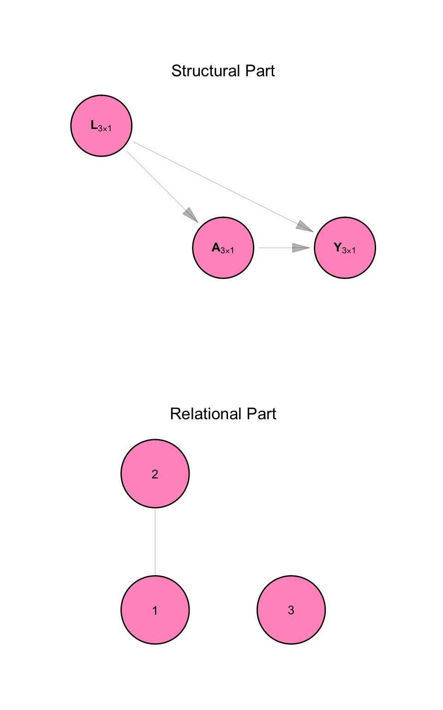
Multiple entity types
The causal DANG relaxes the assumption that all measures in the causal system can be grouped into non-overlapping sets (i.e. that each measure can be attributed to an individual in the sample). In this framework, different types of entities, represented by vectors of different lengths, can be depicted on the same DANG.
The causal DANG shown in Figure B.10 represents the first week of the campaign mentioned in Example 3. Let \(\mathbf{T}\) be a \(3\times1\) vector whose entries \(T_j\) are 1 if neighborhood \(j\) is to be vaccinated and \(0\) otherwise. \(\mathbf{M}\) is a \(5\times1\) vector whose entries \(M_i\) indicate whether the \(i^{\text{th}}\) person received a vaccination campaign message or not. \(\mathbf{V}\) is a \(5\times1\) vector whose entries \(V_i\) show whether participant \(i\) is vaccinated or not.
structural <- example_dang_2_structural() |>
plot_swig(node_radius = 0.15) +
scale_fill_mpxnyc(option = "light") +
theme_mpxnyc_blank() +
ggplot2::ggtitle("Structural Part")
relational <- example_dang_2_relational() |>
plot_swig(node_radius = 0.2, node_margin = 0) +
scale_fill_mpxnyc(name = "Entity type", option = "light") +
theme_mpxnyc_blank() +
ggplot2::ggtitle("Relational Part")
figure <- cowplot::plot_grid(structural, relational, ncol=1, rel_heights = c(3,3))
legend_pre <- relational + ggplot2::theme(legend.position = "right")
legend <- cowplot::get_legend(legend_pre)
cowplot::plot_grid(figure, legend, nrow = 1, rel_widths = c(4,1))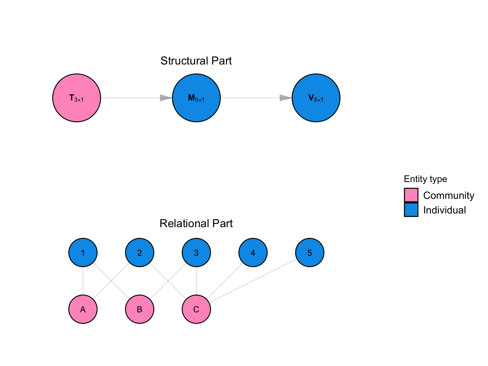
We introduce the Single World Intervention Network Graph (SWING) - a simple extension of the SWIG that allows for the representation of the counterfactual outcomes of interventions in complex causal systems.
The SWING has two parts: a structural part and a relational part. Like the causal DANG, the SWING represents vector-valued random variables (rather than scalars) as nodes. Like the SWIG, the SWING splits the nodes that are to be intervened upon by the experimenter. Figure B.11 shows the counterfactual distribution of the variables in the model under an intervention setting \(\mathbf{T}\) to the value \(\mathbf{t}\).
structural <- example_swing_structural() |>
plot_swig(node_radius = 0.15) +
scale_fill_mpxnyc(option = "light") +
theme_mpxnyc_blank() +
ggplot2::ggtitle("Structural Part")
relational <- example_swing_relational() |>
plot_swig(node_radius = 0.2, node_margin = 0) +
scale_fill_mpxnyc(name = "Entity type", option = "light") +
ggplot2::theme(legend.position = "right") +
theme_mpxnyc_blank() +
ggplot2::ggtitle("Relational Part")
legend_pre <- relational +
ggplot2::theme(legend.position = "right")
legend <- cowplot::get_legend(legend_pre)
figure <- cowplot::plot_grid(structural, relational, ncol=1, rel_heights = c(3,3))
cowplot::plot_grid(figure, legend, nrow = 1, rel_widths = c(4,1))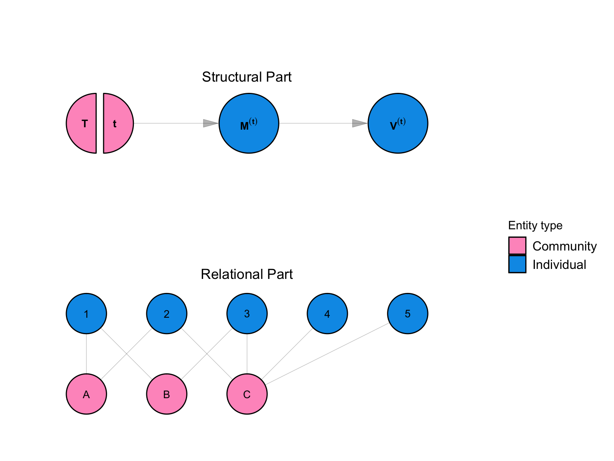
See Section B.2 for a fuller description of the below assumptions.
Under the SSNAC framework, we make the assumption of no spillover: contemporaneous measurements on observational units of a given entity type are independent of each other given all prior measures. The time-ordering of the measurements is given by the structural part of the causal DANG. We further make the assumption of network interference - that interference respects the mapping given by the relational part of a causal DANG. i.e. The exposure mapping for each equation in the structural equation model is loyal to the graph that encodes the relational part of the SWING.
We make the Identical distribution assumption: the structural equations that produce each observational unit’s measures are identical across observational units of the same entity type. We assume that the exposure mapping for each variable in the model is characterized by homogeneous interference. i.e: the exposure mapping is separable, equivalent, symmetric, and bounded. In applications with repeated measures, if the structure of the causal DANG allows, the SSNAC framework allows for the assumption of time homogeneity: the structural equations are identical across time. We apply this assumption in Example 3 below.
The causal DANG shown in Figure B.12 represents the three week campaign mentioned in Example 3 (we omit the relational part and show only the structural part). Let \(\mathbf{T}_s\) be a \(3\times1\) vector whose entries \(T_{sj}\) are 1 if Neighborhood \(j\) is to be vaccinated at time \(s\) and \(0\) otherwise. \(\mathbf{M}_s\) is a \(5\times1\) vector whose entries \(M_{si}\) indicate whether the \(i^{\text{th}}\) person received a campaign message at time \(s\) or not. \(\mathbf{V}_s\) is a \(5\times1\) vector whose entries \(V_{si}\) show whether participant \(i\) is vaccinated or not at time \(s\). Finally, \(\mathbf{R}_s\) is a \(3\times1\) vector whose entries \(R_{si}\) shows the risk rating of neighborhood \(j\) at the beginning of time \(s\). Equation B.9 specifies this model for Person \(i\) and Neighborhood \(j\) at time \(s\):
program_dang() |>
plot_swig(node_radius = 0.4) +
scale_fill_mpxnyc(option = "light") +
theme_mpxnyc_blank()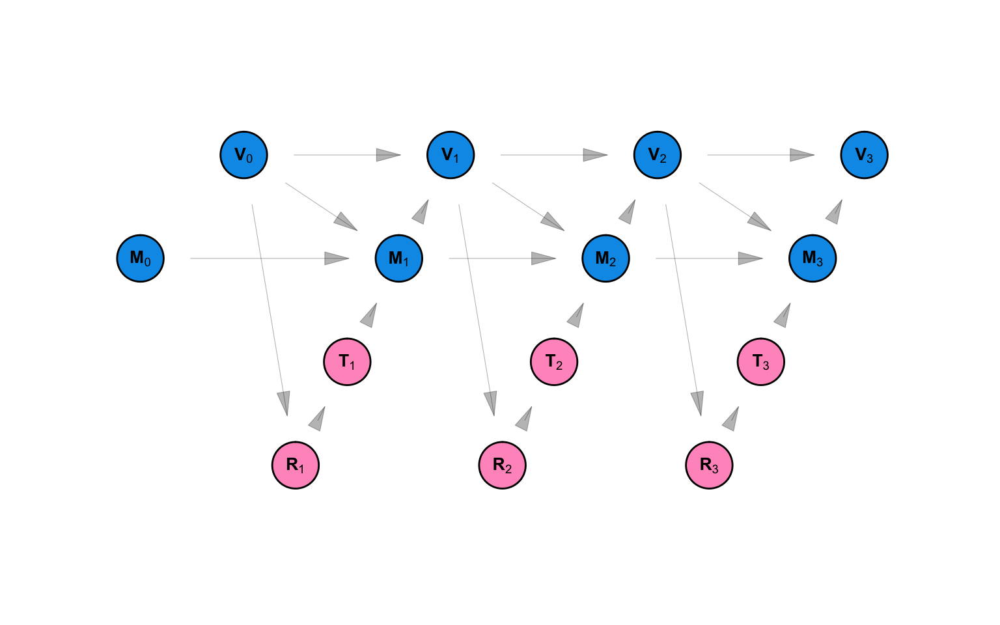
\[ \begin{aligned} M_{0i} &= f_{M_0}(U_{M_{0i}}) \\ V_{0i} &= f_{V_0}(U_{V_{0i}}) \\ R_{sj} &= f_{R}(U_{R_{sj}}, \mathbf{V}_{s-1}) \\ T_{sj} &= f_{T}(U_{T_{sj}}, R_{s,j}) \\ M_{si} &= f_{M} (U_{M_{\{si\}}} , V_{\{s-1,i\}}, M_{\{s-1,i\}}, \mathbf{T}_{\{s,\mathscr{N}_i\}})\\ V_{si} &= f_{V}(U_{V_{\{si\}}}, M_{\{si\}}, V_{\{s-1,i\}}) \\ \end{aligned} \tag{B.9}\]
According to Equation B.9, \(R_{sj}\), the risk rating for Neighborhood \(j\) at time \(s\), is a function of \(\mathbf{V}_{s-1}\), the vaccination status of every individual at time \(s-1\). \(T_{sj}\) - an indicator for whether or not Neighborhood \(j\) conducted a campaign at time \(s\), is a function of the risk rating for Neighborhood \(j\) at time \(s\).
\(M_{si}\), which indicates whether or not an Person \(i\) received a campaign message at time \(s\), is a function of whether or not person \(i\) was vaccinated at time \(s-1\), whether they received a campaign message at time \(s-1\), and whether or not one of the neighborhoods they live in or visit conducted a campaign at time \(s\). The vaccination status of individual \(i\) at time \(s\) is a function of whether or not they received a campaign message at time \(s\) and whether or not they were vaccinated at time \(s-1\).
Say we want to understand the impact of a vaccination campaign conducted over three weeks on vaccination status. This would be done by setting \(\mathbf{T}_1\) to \(\mathbf{t}_1\), \(\mathbf{T}_2\) to \(\mathbf{t}_2\), and \(\mathbf{T}_3\) to \(\mathbf{t}_3\) and noting the resulting counterfactual vaccination status at the end of week 1 (\(\mathbf{V}_1^{(\mathbf{t}_1)}\)), week 2 (\(\mathbf{V}_1^{(\mathbf{t}_1, \mathbf{t}_2)}\)), and week 3 (\(\mathbf{V}_1^{(\mathbf{t}_1, \mathbf{t}_2, \mathbf{t}_3)}\)). This counterfactual model is defined Equation B.10 as shown in shown in Figure B.13.
program_swing() |>
plot_swig(node_radius = 0.5, nudge_intervention_labels = 0.2) +
scale_fill_mpxnyc(option = "light") +
theme_mpxnyc_blank()
\[ \begin{aligned} M_{0i} &= f_{M_0}(U_{M_{0i}}) \\ V_{0i} &= f_{V_0}(U_{V_{0i}}) \\ R_{sj}^{(\bar{\mathbf{t}})} &= f_{R}(U_{R_{sj}}, \mathbf{V}_{s-1}^{(\bar{\mathbf{t}})}) \\ T_{sj}^{(\bar{\mathbf{t}})} &= f_{T}(U_{T_{sj}}, R_{s,j}^{(\bar{\mathbf{t}})}) \\ M_{si}^{(\bar{\mathbf{t}})} &= f_{M} (U_{M_{\{si\}}} , V_{\{s-1,i\}}^{(\bar{\mathbf{t}})}, M_{\{s-1,i\}}^{(\bar{\mathbf{t}})}, \mathbf{t}_{\{s, \mathscr{N}_i\}})\\ V_{si}^{(\bar{\mathbf{t}})} &= f_{V}(U_{V_{\{si\}}}, M_{\{si\}}^{(\bar{\mathbf{t}})}, V_{\{s-1,i\}}^{(\bar{\mathbf{t}})}) \\ \end{aligned} \tag{B.10}\]
where \(\bar{\mathbf{t}}\) is defined as “the history of \(\mathbf{t}\)”. i.e. at time 1, \(\bar{\mathbf{t}} =\mathbf{t}_1\). At time 2, \(\bar{\mathbf{t}} = [\mathbf{t}_1, \mathbf{t}_2]\), etc.
We are interested in vaccine coverage throughout the three week campaign. For a given week \(s\), this is the sum of the vaccine status outcome \(\mathbf{V}\) across individuals.
\[ E[\sum_{i=1}^5 V_{si}^{(\bar{\mathbf{t}})}] \]
Because individual vaccination status is both a confounder and a mediator of the relationship between neighborhood intervention status and vaccination status, we cannot identify our estimands using conditional expectations of the observed data. We must use a marginal structural model.
We can estimate the outcome of interest using the inverse probability of treatment weights, noting that the treatment in this case is the network exposure value \(g(t_{\bar{s},N_i})\) for \(\mathbf{T}\).
\[ V_{si}^{(\bar{\mathbf{t}})} = \frac{V_{si} \mathbf{1}_{x = g(t_{\bar{s},N_i}) }(g(T_{\bar{s},N_i})) }{\prod_{q=1}^s P[g(\mathbf{T}_{q,N_i}) = g(\mathbf{t}_{q,N_i}) | \mathbf{R}_{\bar{q}N_i}]} \] where \(\mathbf{R}_{\bar{s}N_i}\) is the “history of \(\mathbf{R}_{sN_i}\)”. e.g.
\[ \mathbf{R}_{\bar{3}N_i} = [\mathbf{R}_{1N_i}, \mathbf{R}_{2N_i}, \mathbf{R}_{3N_i}] \]
We used data from RESPND-MI to assess the effectiveness of two approaches to conducting mass vaccination campaigns quickly. MPX NYC is an online survey of about 1300 individuals that was conducted in 2022 in New York City. Study participants were asked to indicate their home on a map and were asked to indicate places they had had social contact in a congregate setting. Spatial coordinates were converted into community district identifiers. Community districts spatially partition the city of New York.
Under the SSNAC framework, our intervention of interest might not be about setting the value of any particular variable, but setting a policy or a process that produces a set of variables in the causal model. This would be done by changing the structural equations which produce those variables. In the SWING shown in Figure B.14 and Equation B.11, we show an intervention which replaces the function for the risk rating for each community (\(\mathbf{R}\)) with the function \(h\). Every variable that is downstream of the first variable created using \(h\) is marked with a superscript \((h)\) to show that it is partially determined by that function.
We can now ask what the impact of taking policy \(h\) would be on the decision whether or not to vaccinate a neighborhood \(j\) at time \(s\) (\(T_{js}\)). We can also ask what the impact of the policy is on the the exposure of participant \(i\) to the campaign message at time \(s\) (\(M_{is}\)).
Our interest in RESPND-MI, however, was initially to provide evidence to inform a targeted vaccination campaign, so the main outcomes of interest are the vaccination status of each individual \(i\) at time \(s\) (\(V^{(h)}_{is}\)). We were interested in contrasting two approaches to assigning risk-ratings to community districts: the contact-neutralizing approach and the movement-neutralizing approach.
Whereas the contact-neutralizing approach ranks community districts by how many individuals are connected to them, the movement-neutralizing approach ranks community districts by how centrally they are connected to other community districts through the exchange of individuals.
We make the simplifying assumption that only one neighborhood is vaccinated at a time - the top-ranked one. We make the further simplifying assumptions that every person associated with a community district (either through residence or social activity) receives the campaign message when a community district is vaccinated, and that every person who receives a campaign message gets vaccinated. Once an individual is vaccinated, they remain vaccinated.
According to the model specified by structural equations B.11, no individual \(i\) has been vaccinated at time 0, and nobody receives the campaign message. The risk rating for community district \(j\) at time \(s\) is some function \(h\) of the vaccination status at time \(s-1\) for each individual who is connected to that community district. An intervention is conducted in community district \(j\) as time \(s\) if that community district has the highest risk rating. Each individual \(i\) is said to have received the campaign message at time \(s\) if the intervention was conducted in any of the community districts he is connected to. Finally, we consider individual \(i\) vaccinated at time \(s\) if they were vaccinated at time \(s-1\) or if they received the campaign message in time \(s\). The risk rating is given by the function \(h\).
hypothetical_intervention_swing() |>
plot_swig(node_radius = 0.5, nudge_intervention_labels = 0.2) +
scale_fill_mpxnyc(option = "light") +
theme_mpxnyc_blank()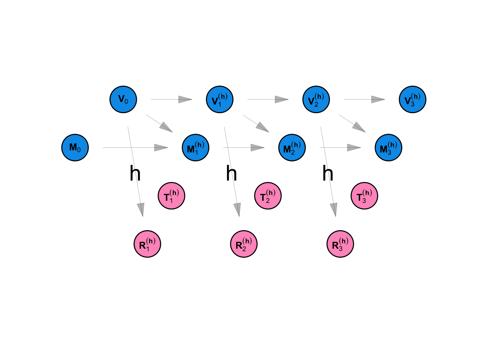
\[ \begin{aligned} M_{0i} &= 0 \\ V_{0i} &= 0 \\ R_{sj}^{(h)} &= h(\mathbf{V}_{s-1}) \\ T_{sj}^{(h)} &= \begin{cases} 1 & R_{sj}^{(h)} = max_k R_{sk}^{(h)} \\ 0 & \text{otherwise} \end{cases} \\ M_{si}^{(h)} &= \begin{cases} 1 & \mathbf{T}_{s\mathscr{N}_i}^{(h)} \neq \mathbf{0} \\ 0 & \text{otherwise} \end{cases} \\ V_{si}^{(h)} &= \begin{cases} 1 & M_{si}^{(h)} = 1 \text{ or } V_{s-1,i}^{(h)} = 1\\ 0 & \text{otherwise} \end{cases} \\ \end{aligned} \tag{B.11}\]
Define \(\psi(i, j)\) as an adjacency function - an indicator function that equals to \(1\) if Person \(i\) lives in or visits neighborhood \(j\) and \(0\) otherwise. Let \(\mathscr{N}_P\) be the indices of all person nodes and \(\mathscr{N}_N\) be a set of indices for neighborhood nodes. Under the contact-neutralizing approach:
\[ h_{sj}(\mathbf{V}_{s-1}) = \sum_{ i \in \mathscr{N}_P} (1 -V_{(s-1), i}) \times \psi(i, j) \]
and under the movement-neutralizing approach:
\[ h_{sj}(\mathbf{V}_{s-1}) = \sum_{ i \in \mathscr{N}_P} (1 -V_{(s-1), i}) \times \psi(i, j) \sum_{ k \in \mathscr{N}_N} \psi(i, k) \]
Intervention coverage for the \(s^{th}\) community district to be immunized, is defined:
\[ C_s^{(h)} = \frac{1}{|\mathscr{N}_p|}\sum_i V_{si}^{(h)} \]
The cumulative intervention coverage after immunizing \(s\) community districts is therefore:
\[ \bar{C_s}^{(h)} = \sum_{v = 1}^s{C_v }^{(h)} \]
We simulated the intervention outlined above using RESPND-MI data by calculating the \(G^{s}(N, \psi_s)\) where \(s\) ranges from \(1\) to the total number of community districts. We measured the uncertainty of our estimates by re-sampling study participants with replacement.
Social network impact
Define graph \(G^{s}(N, \psi_s)\) such that:
\[ \psi_s(i, j) = \psi(i, j) \times (1 -V_{(s-1), i}) \]
The cumulative social network impact of immunizing \(s\) community districts is measured in terms of the size of the largest of the connected components \(LCC_{(s)}\) of the \(G^{s}(N, \psi_s)\) network as a proportion of the total number of participants.
\[ \frac{LCC_s}{|N_p|} \]